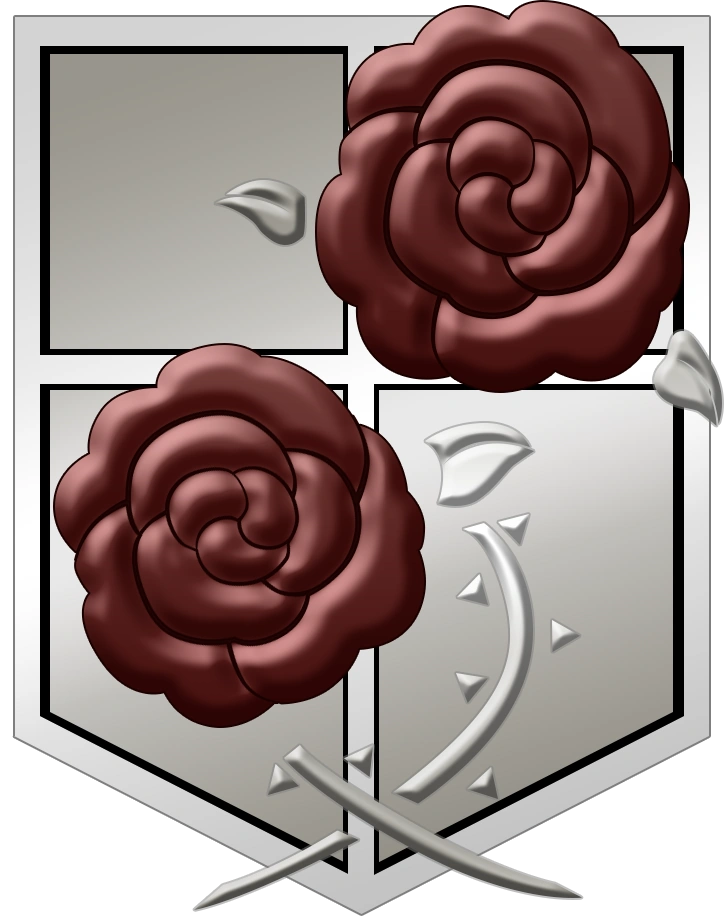
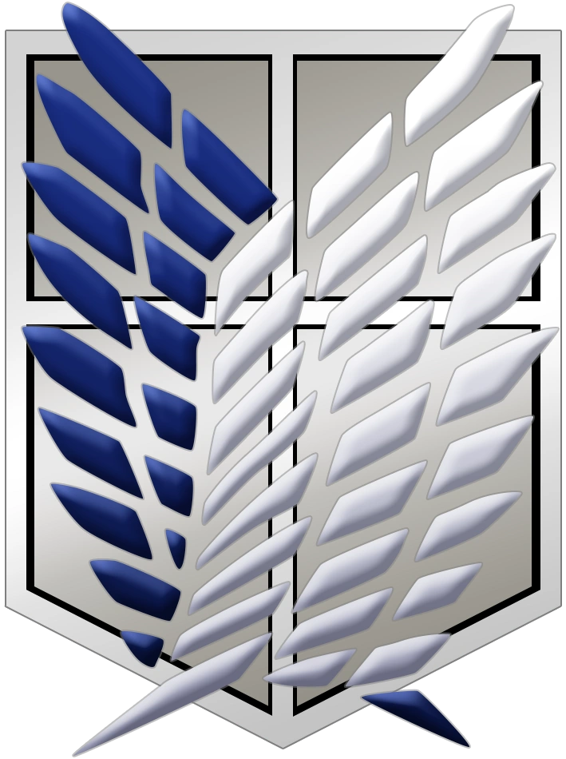
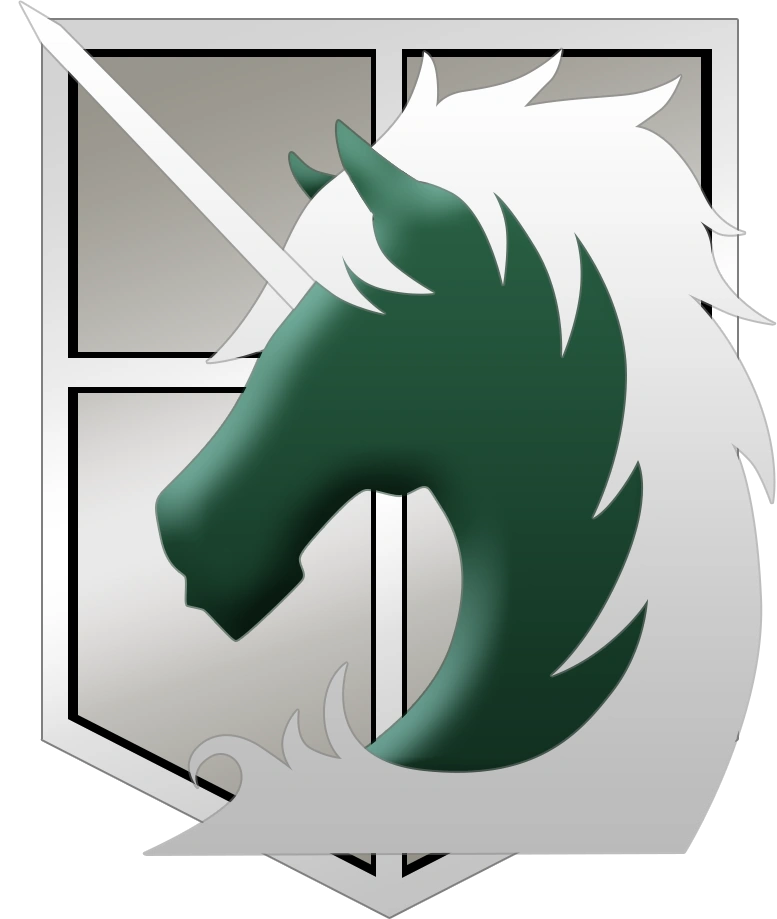

Military Organizations
About the Military
The military forces of Paradis Island were established to protect humanity from the threat of Titans and maintain order within the Walls. The organization was divided into three main branches, each with different responsibilities and areas of operation. The Garrison Regiment was responsible for defending and maintaining the Walls, the Scout Regiment explored the territory beyond them, and the Military Police Brigade maintained order within the interior and protected the royal government. After completing their training, recruits could choose which branch they wished to join, although admission to the Military Police was restricted to the ten highest-ranking graduates.

Garrison Regiment
The Garrison Regiment is responsible for protecting and maintaining the Walls, ensuring the safety of the population living within them. As the largest military branch, its soldiers patrol the districts, operate the cannons, supervise security and organize civilian evacuations during emergencies. In the event of a breach, the Garrison is usually the first line of defense against invading Titans. Its soldiers must be prepared to defend the Walls and protect civilians, especially in the districts closest to the outer territories. Notable members of this branch include Dot Pixis, Hannes and Rico Brzenska.

Scout Regiment
The Scout Regiment, also known as the Survey Corps, is responsible for exploring the territory beyond the Walls and gathering information about the world outside human civilization. Its soldiers participate in expeditions to study Titans, discover new territories and attempt to reclaim land previously lost to them. Because of their missions, the Scouts face some of the greatest dangers among the military branches and suffer significant casualties. Despite the risks, the organization is driven by the pursuit of knowledge and humanity's freedom. Its emblem, known as the Wings of Freedom, represents the desire to explore the world beyond the Walls. Characters such as Eren Yeager, Mikasa Ackerman, Armin Arlert, Levi Ackerman, Hange Zoë and Erwin Smith are among the notable members of this branch.

Military Police Brigade
The Military Police Brigade is responsible for maintaining order within the Walls and protecting the royal family and the ruling government. Its soldiers are mainly stationed in the interior districts, particularly near the capital. Unlike the other two branches, the Military Police operates mostly away from direct Titan encounters. Admission is highly selective, as only the ten highest-ranking graduates of each training class are allowed to join. Although considered a prestigious position, the organization is also associated with corruption and the abuse of authority among some of its members. Notable characters associated with this branch include Annie Leonhart and Jean Kirstein, who was eligible to join after graduating but eventually chose a different path.